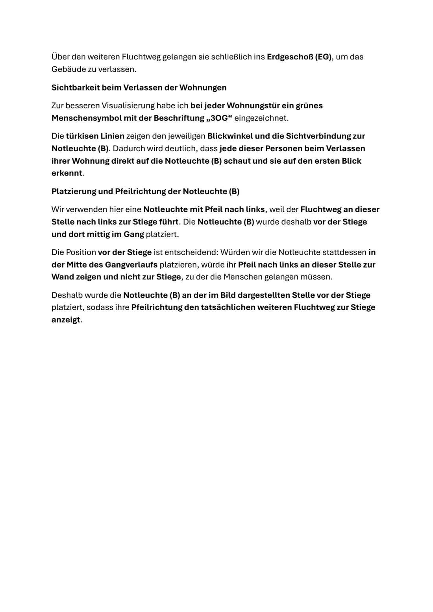
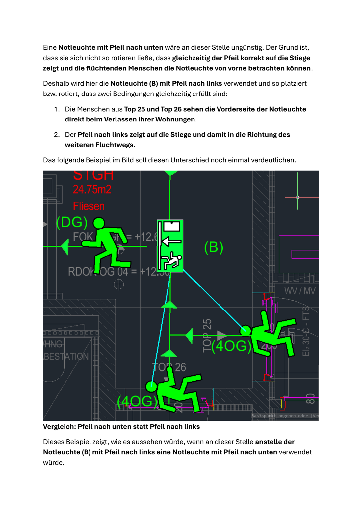
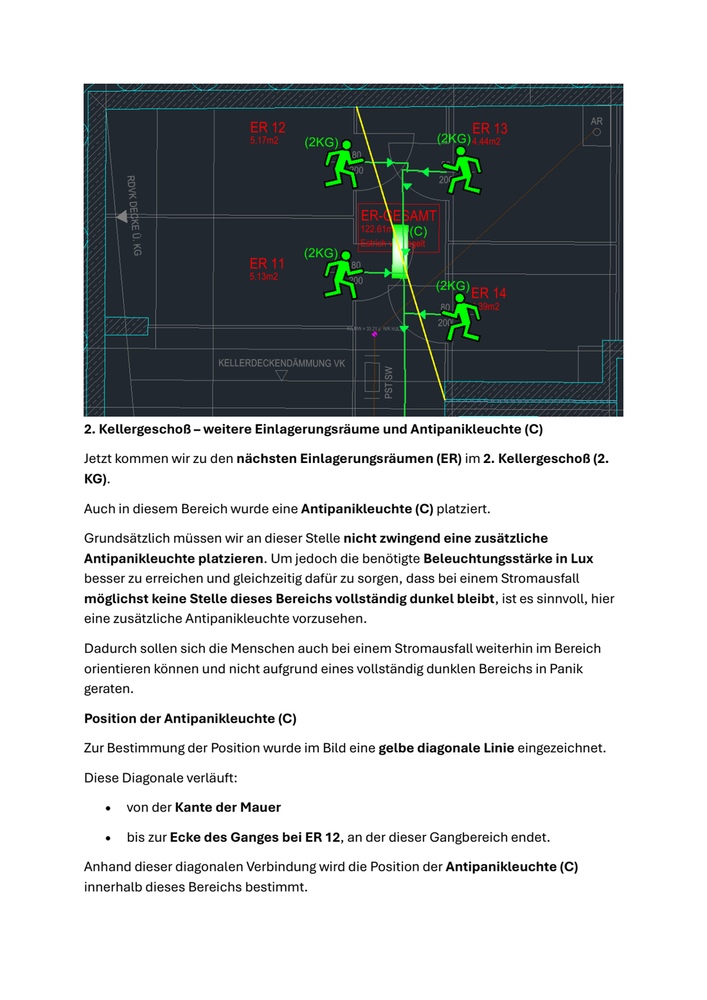
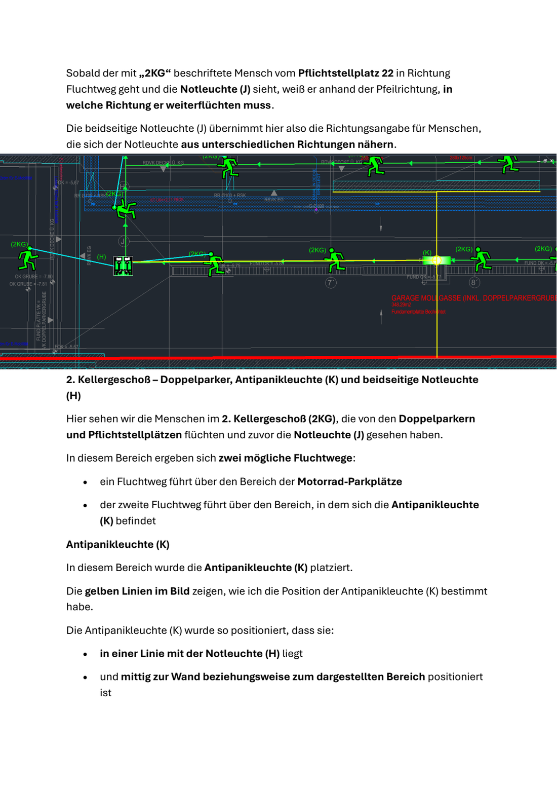
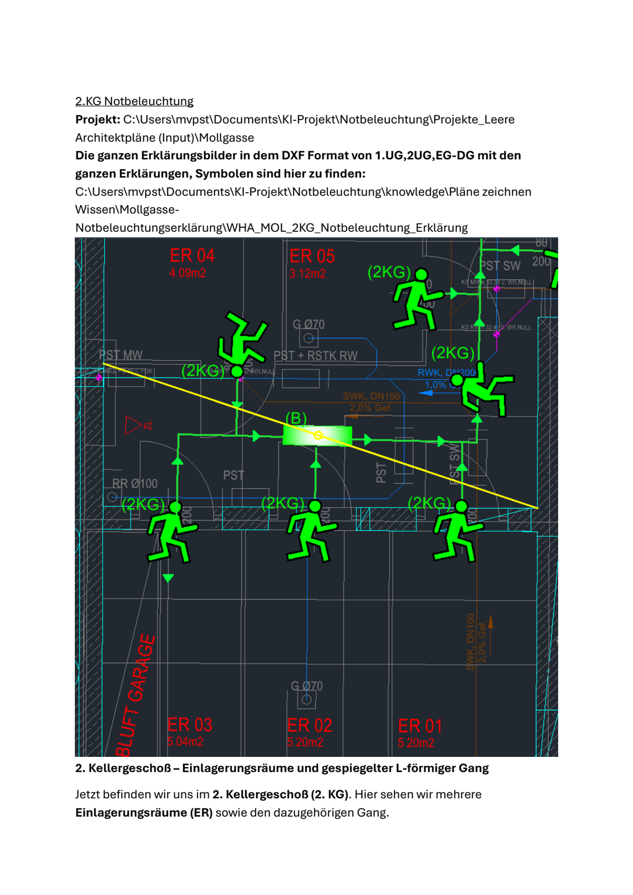
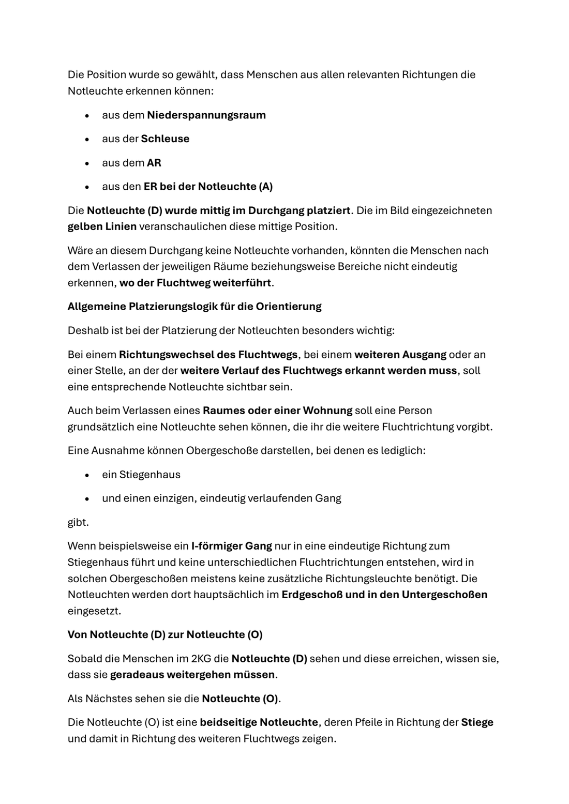

Mollgasse-Review: Wie gut zeichnet die Engine schon wie du?
Analyse vom 30.09.2026 · Basis: deine Erklär-PDF (95 Seiten, jede Seite als Bild analysiert, 283 Regel-Aussagen) + 8 Erklär-DXFs (97 Referenzleuchten, jede per Handle vermessen) + echter Engine-Lauf auf allen 8 Geschossen. Vollreferenzen: REVIEW.md, GEGENPRUEFUNG_ENGINE.md, ANALYSE_PDF.md.
19/35
Regeln deckungsgleich (Engine macht es schon genau so)
6
Regeln abweichend (drin, aber anders als du zeichnest)
10
Regeln fehlen (4 davon durch fehlende Eingangsdaten blockiert)
33/97
Referenzleuchten heute richtig getroffen (echter Lauf)
Das Regel-Wissen (35 Regeln aus deiner PDF)
19 deckungsgleich
6 abweichend
10 fehlen
…aber die Leuchten-Reproduktion (97 Referenzleuchten, echter Engine-Lauf)
13 Typ ✓
20 Position ✓, Typ ✗
64 nicht getroffen
Dazu kommen 115 überzählige Symbole, die die Engine setzt, dein Plan aber nicht kennt (davon allein 48 im EG).
Die Kernaussage des Reviews: Das Regel-Wissen ist gut (54 % identisch, 0 harte Widersprüche) — aber die wenigen abweichenden Regeln sind genau die, die jede einzelne Leuchte betreffen: WOHIN genau (Positions-Konvention) und WELCHER Pfeiltyp (Frontalsicht). Eine falsche Konvention verschiebt alles, auch wenn 19 andere Regeln perfekt sitzen. Darum: erst die 6 Abweichler + der Überschuss, dann neue Regeln.
Ergebnis je Geschoss (Engine heute vs. deine Referenz)
Geschoss
Treffer-Bilanz (grün = gepaart · rot = von dir gezeichnet, Engine trifft nicht)
überzählig
EG
5
12 fehlen
+48
1OG
4
7
+8
2OG
4
7
+10
3OG
1
3
+8
4OG
5
2
+9
DG
2
4
+6
1KG
3
9
+11
2KG
9
20
+15
4OG ist am besten (71 %) — dort dominieren die Regeln, die die Engine schon exakt kann. EG/KG sind am schwächsten: EG wegen des Aufheller-Überschusses, die Kellergeschosse, weil die Raumerkennung dort Kellerabteil-Gänge und Garage noch nicht liefert (Selman-Paket S-KG, bereits übergeben).
✅ Was schon gut funktioniert (19 deckungsgleiche Regeln)
deckungsgleich
Die Lese-Konvention deiner Pläne
„Pfeil nach unten/links/rechts" = Block-Familie, die echte Richtung entsteht erst durch Drehung (+ Spiegelung). Die Engine liest und schreibt das korrekt — in 7 PDF-Stellen gegengeprüft, 0 Fehler.
deckungsgleich
Gerade Gang-Zeichen (NB-R06)
Down-Typ, Front ENTGEGEN der Fluchtrichtung — „die ankommende Person sieht die Vorderseite". Fast alle 13 Typ-Treffer kommen aus dieser Regel.
deckungsgleich
UG flüchtet HINAUF (NB-R13)
Kellergeschosse drehen die Stiegen-Logik um — in 1KG/2KG zeigen die Engine-Stiegen-RZ in die richtige Richtung.
deckungsgleich
Sichtkette / „auf den ersten Blick"
Jede Wohnungstür sieht ein Zeichen, redundante fallen weg, Türaufschläge blockieren Sicht — dein Kernprinzip von S.22 ist als Ausdünnungs-Logik gebaut.
deckungsgleich
Kein Symbol in Lift/Schacht
0 Fehlplatzierungen in Aufzügen/Schächten über alle 8 Geschosse.
deckungsgleich
Türleuchten in Pflichträumen + Lichtberechnung
Technik/Müll/Kinderwagen bekommen ihr Tür-Zeichen; jedes Geschoss läuft automatisch durch den Lux-Nachweis (dein QA-Prinzip von S.83).
Betroffen: RW-005 (Stiegen-Band, „sonst zeigt der Pfeil zur Wand", S.30) und RW-001 (Tür-RZ: PDF-Vermessung 735–930 mm raumseitig vs. deine Ansage vom 18.09. „auf der Wandlinie" → Frage 1 unten).

Dein Kernbeleg S.30: „vor der Stiege, sonst zeigt der Pfeil zur Wand" — im DXF vermessen: alle Stiegen-RZ liegen 800–1122 mm vor der Kante, exakt auf der Laufachse.
⚠️ Baustelle 2 — Pfeiltyp-Wahl: die Engine denkt in Vektoren, du in Blickrichtungen

S.35 — dein dokumentiertes Falsch-Beispiel: down-Block statt left = Seitenansicht, Person erkennt das Schild nicht. Genau diese Lehrbeispiele (inkl. DXF-Instanz 413E8) werden die Testfälle für den Einbau.
⚠️ Baustelle 3 — Der Aufheller-Überschuss: 115 Symbole, die dein Plan nicht kennt
Die Engine setzt heute neben jedes Rettungszeichen automatisch einen Aufheller (500 mm dahinter) — eine Ansage aus dem September. Deine Mollgasse-PDF lehrt es anders: Zusatzleuchten (Antipanik/Aufheller) kommen nur, wo die Lichtberechnung es verlangt oder eine Sichtblockade existiert — und ihre Position wird konstruiert (Diagonale), nicht pauschal versetzt.
EG: 48
übrige Geschosse: 67
Die 115 überzähligen Symbole nach Geschoss — fast die Hälfte im EG.
Klassifikation: ENGINE-ÜBERSCHUSS — die Regel hat im Mollgasse-Regelwerk keinen Beleg. Vorschlag: Aufheller nur noch nach gescheitertem Lux-Nachweis setzen (= dein Prinzip). Das ist der größte Einzelhebel und Frage 2 unten.

S.59 — so machst du es: optionale Antipanik zur Lux-Stützung, Position über die Bereichs-Diagonale konstruiert („nicht zwingend, aber sinnvoll").
💡 Zwei neue Entdeckungen — deine Konstruktionen sind EXAKTE Rezepte

Rezept 2 (S.67): Antipanik (K) fluchtend in EINER Achse mit der nächsten Notleuchte (H) — nachgemessen Δ 24 mm — UND wandmittig (Δ 8 mm). Beide Rezepte sind direkt einbaubar (Plan-Punkt #4/#5).
🔍 Weitere Befunde aus dem Seite-für-Seite-Abgleich
PDF-Textfehler
S.57/58: B↔C vertauscht — jetzt im Bild bewiesen

Der Text nennt (B) „vertikal ausgerichtet" — im Bild und DXF liegt (B) horizontal auf der Diagonale (rot 178,7°); vertikal ist (C). Die Orientierungs-Absätze gehören getauscht. Regelgehalt bleibt gültig.
Regel bestätigt
S.74: Die OG-Ausnahme — weniger ist richtig

Ein Stiegenhaus + eindeutiger I-Gang → meist KEINE zusätzliche Richtungsleuchte in Obergeschossen. Die Engine kennt diese Ausnahme noch nicht — daher ihr OG-Überschuss (+8 bis +10 je Geschoss). Einbau = Plan-Punkt #7.
Abgleich PDF ↔ DXF gesamt: 34 Vermerke, 0 Regel-Widersprüche
Klasse
Fälle
Bedeutung
Sprachkonvention
7
„Pfeil nach unten" = Blockname, nicht Weltrichtung — kein Fehler, aber DIE Lese-Lehre (Engine macht's richtig)
PDF-Textfehler
5
S.57 B↔C · S.35/36 Kennung (B)↔(D) + Text-Duplikat · S.19 Sichtlinien-Zuordnung → für dich zum Korrigieren
Kopier-Reste
2
u.a. EG 2137C (deine bekannte Löschliste) — beim Messen ausgefiltert
Im DXF, im PDF unerklärt
4
8532F (2OG), 78DFD-Szene (3OG), DG-West 206DB/206D6, (D) 1BFC3 (1KG) — regelkonform, aber ohne Erklär-Text
Werkzeug-Lücken
5
rote Trennlinie/blaue Kuppel/gelbe Blockpfeile/Leerzeichen-Kennungen — unsere Extraktoren, nicht dein Plan
Benennungs-Unschärfen
3
„Haupteingang" für zwei Westtüren · gleiche Kennung (D) für zwei Situationen (S.20/S.23)
🛠️ Der Fahrplan: 4 Phasen, jede messbar am GT-Harness
M1
Aufheller-Drossel + Werkzeug-Fixes — B1 nur noch nach Lux-Gate; Kopier-Rest-Filter; Kennungs-Matcher.
Ziel: 33/97 stabil
Überschuss 115 → < 40
M2
Positions-Rezepte — Stiegen-Band 800–1122 mm, Tür-Versatz (nach deiner Antwort), Diagonalen-Mitte + Achs-Fluchtung für Antipanik.
Ziel: ≥ 55/97 gepaart
M3
Typ-Wahl nach Frontalsicht + OG-Ausnahme + beidseitig-Konvention (2 gespiegelte Blöcke wie in deinen Plänen).
Ziel: Typ-Match ≥ 70 % · beidseitig ≥ 4/8
M4
Selman-Pakete S-KG (Kellerabteile, Garage, Zirkulation — bereits übergeben) + Gesamt-Re-Run.
Ziel: ≥ 80/97 (≈ 83 %)
Rest-Analyse → 95 %
Jede Phase endet mit einem Messlauf über alle 8 Geschosse (mollgasse_gt_vergleich.py) und deiner Abnahme, bevor Test-Bänder nachgezogen werden. Risiken (Fischamend-Stückzahlen, 4OG-Rotations-Golden, Hausfeld 2DG 3/3) sind in REVIEW.md §6 aufgelistet — Hausfeld läuft als Wachhund in jeder Phase mit.
❓ Deine 8 Entscheidungen (blockieren teilweise M1/M2)
1 · Tür-RZ-Versatz: Deine Ansage 18.09. „auf der Wandlinie" ↔ PDF-Vermessung 735–930 mm raumseitig. Was gilt? (blockiert M2)
2 · Aufheller-500mm: Pauschal je RZ (Ansage 09/26) ↔ nur per Lichtberechnung (deine PDF). Drosseln? (größter Hebel, M1)
3 · beidseitig: Du zeichnest 2 gespiegelte Einzel-Schilder, die Engine rendert 1 Kombi-Block. Ziel-Format für Produktionspläne?
4 · PDF-Korrekturen: S.57/58 B↔C-Tausch, S.35/36 Kennung (B)↔(D) + Text-Duplikat, S.19 Sichtlinien-Satz — korrigierst du die PDF?
5 · „Haupteingangstür": S.1 und S.6 nutzen den Begriff für zwei verschiedene Westtüren (20286 vs. 20240) — Benennung klären.
6 · Unerklärte Leuchten: 8532F (2OG), 78DFD-Szene (3OG), DG-West (206DB/206D6), (D) 1BFC3 (1KG) — bewusst ohne Erklärtext oder PDF-Nachtrag?
7 · FREIHEIT / KEINE FREIHEIT (S.77): Bedeutung der Kästen weiter offen (seit 18.09.).
8 · Phasen-GO: M1 starten (kein Blocker) — ja/nein?
Erstellt 30.09.2026 · Alle Zahlen aus echten Läufen/Vermessungen, nichts geschätzt · Quellen im selben Ordner: REVIEW.md · GEGENPRUEFUNG_ENGINE.md · ENGINE_WISSEN_IST.md · ANALYSE_PDF.md (95 Seiten) · ANALYSE_DXF_<Geschoss>.md (8×) · ABWEICHUNGEN_PDF_DXF.md · REGELWERK_Mollgasse.md/.json · Roh-Messdaten: Projekte/_ergebnis/Mollgasse_GT/<G>/vergleich.json